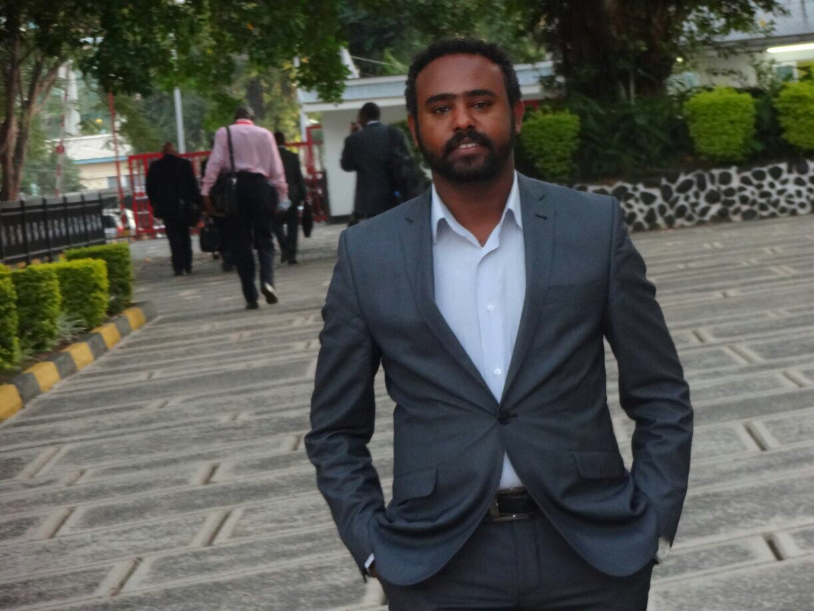

About Me
Every professional has a background in certain field of Studies. Some change their career through a process of time following economic intake, interest and professional dynamism, while others are so static and keep their as-is profession. Underlining the limitless human interest, I certainly align myself with the first group.
My great passion is throwing myself to a challenging professional environment {emp, in a professional perspective} to get a diverse experience and knowledge. It really helps me to be strong in my life and to coup up with situations and environments. I know that no single approach is the right path for every life ups and down, and I believe that I have to be trained in certain fields, and so I have been studied different field of studies including Law, Conflict Resolution, Financial Service and, know in computer programing aspect.
My educational background includes a LLB in Law, MA in International Security Sector Management from Cranfield University. I have also different Certifications including Certified in Defense and Legal Affairs Attache,AML/ CFT. I have also an extensive experience in the filed of law “especially in public prosecution, drafting of laws and legal counselling”.
Connect with Me